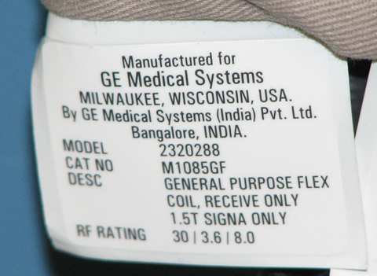
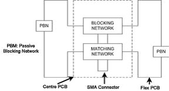

Operating Documentation
Direction 5670000, Rev# 1
Optima MR450w 1.5T Service Methods
Module Version 3.0, Version Date 10/27/09
Operating Documentation |
The coil consists of one major assembly (see Illustration 1). To identify the 1.5T GP Flex coil, refer to the coil label (see Illustration 2). The unit is 55.6 cm long (not including straps) by 22 cm wide. It has two mesh “windows” which indicate the open center of the two coils and which aid in positioning. Two 78.5 cm long straps are attached to one end of the coil fabric. The undersides of these straps are covered with Velcro, which attach to a Velcro hook strip at the other end of the coil and to four Velcro hooks located above and below the mesh windows. A 183.3 cm long RF cable exits the material on one of the long sides and has a BNC connection that attaches to the Surface Coil Adaptor.
Illustration 1: 1.5T GP Flex Coil

Illustration 2: 1.5T GP Flex Coil Label

Table 1: Shipping List
| Description | GE Part # | Qty |
| 1.5T GP Flex Coil | 2320288 | 1 |
| Operator Manual | 2336151-299 | 1 |
Storage Requirements
Store the coil in the scanner room.
Dimensions
Dimensions (excluding cable assembly): 55.6 cm x 22 cm x 4 cm
Strap Length: 78.5 cm
Weight
575 grams (approximately 1.268 lbs) maximum
The General Purpose (GP) Flex coil design is a linear, receive-only flexible coil. The GP Flex Coil consists of two loops that are serially connected to create a co-rotating "saddle coil" pair. When aligned properly, this "saddle" design provides exceptional uniformity across the sensitive volume of the coil and a minimum of bright spots or high-intensity areas. If the loops are positioned in a more open fashion (i.e., they move farther away from each other, toward a planar, or flat configuration), the image uniformity decreases. For close positioning do not overlap the coil ends. Doing so will not damage the coil, but the performance will suffer. For optimal positioning the circular shape should be maintained with the two-mesh windows 10 cm apart and the coil ends 5 cm apart. Some deviation from the optimal position will not significantly degrade the uniformity. Therefore, this coil can be used in anatomical areas such as the hip, brachial plexus, larger knees and ankle.
The coil consists of one major assembly (see Illustration 1). The two loops are in a flexible material covered with fabric. This allows the GP Flex Coil to bend in one direction, making it easy to wrap around the anatomy of interest.
The Functional Block Diagram of the antenna electronics is shown in Illustration 3. The two flex PCB wings on either side of the rigid PCB form the loops. The rigid PCB has a matching network that matches the loaded antenna to 50 ohms, and an active blocking network. The blocking network consists of a single PIN diode and a tuned LC network. The diode is forward biased whenever the body coil transmits. The external cable is connected to the antenna via a right angle SMA jack. The flex PCB has passive blocking networks, which consist of a Schottky Diode and a tuned LC network.
Illustration 3: GP Flex Coil Functional Block Diagram

| ||||
| HAVING THE COIL ATTACHED TO THE SYSTEM DURING CLEANING OR WHEN IT IS WET MAY RESULT IN ELECTRICAL SHOCK. | ||||
| DETACH COIL CONNECTOR FROM SCANNER BEFORE ATTEMPTING TO CLEAN. DO NOT REATTACH AFTER CLEANING UNTIL COIL HAD DRIED COMPLETELY. |
| ||||
| Do not spray or pour cleaning solution directly on coil. Do not submerge coil in solution. The coil contains sensitive electronics components that could be damaged by the solution. | ||||
| If necessary, a 10% bleach solution can be used for more rigorous cleaning; however, some discoloration of the strap, cover or pad may occur. |
Contact the GE authorized service personnel for disposing the coil at the end of product life.